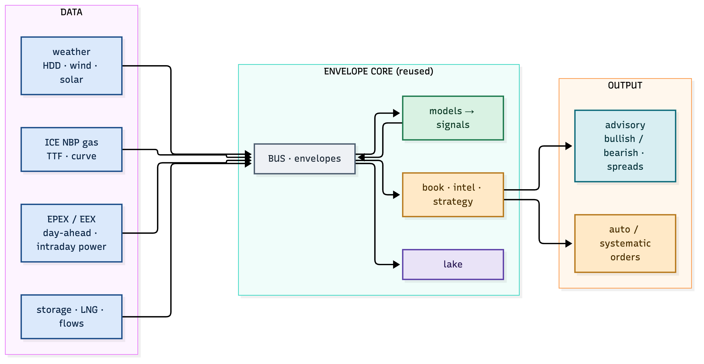
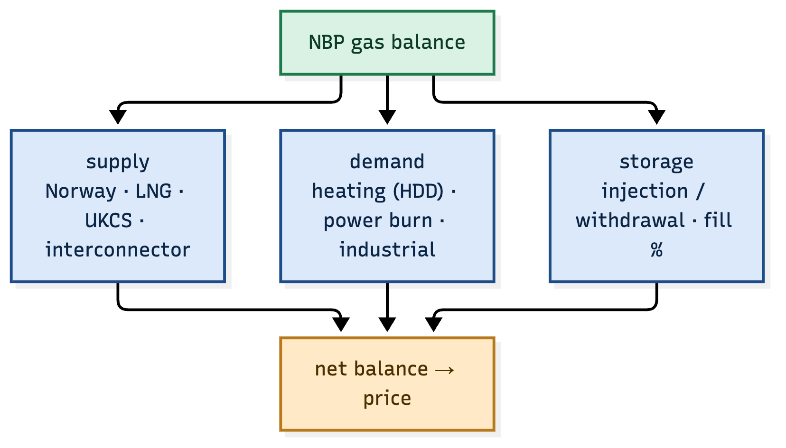
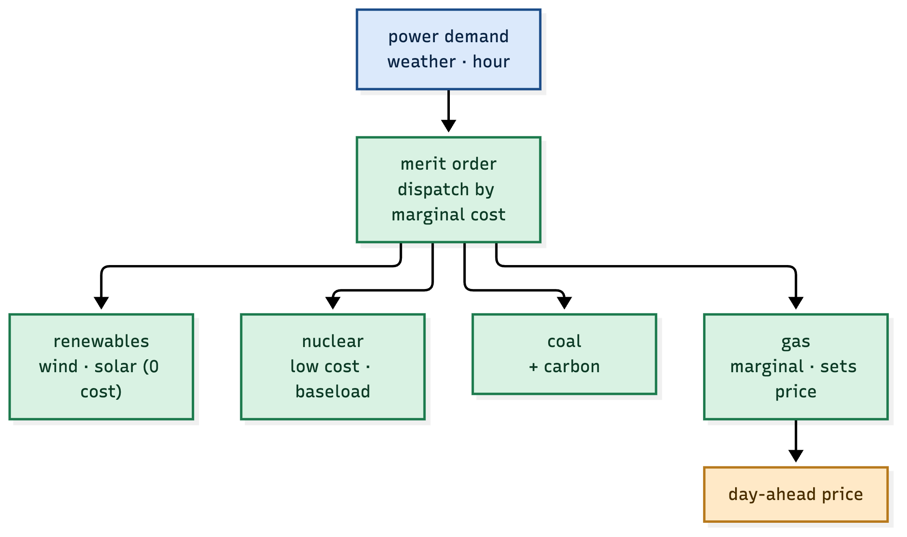
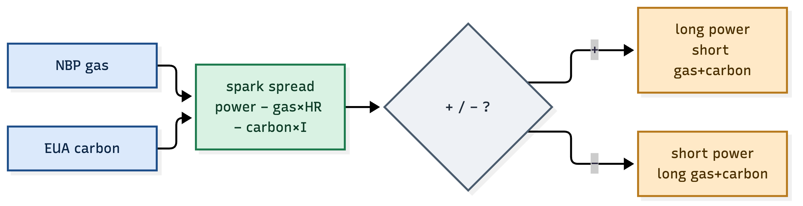
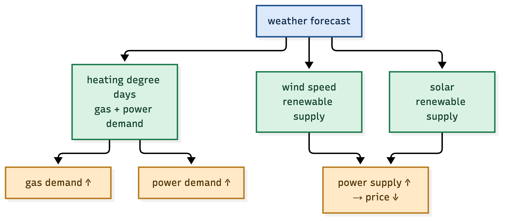
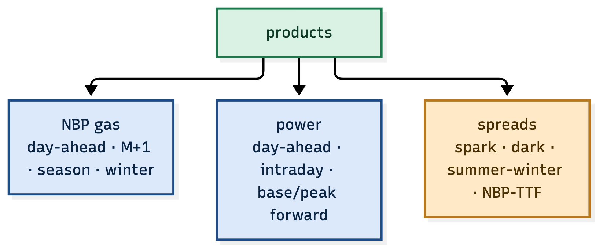
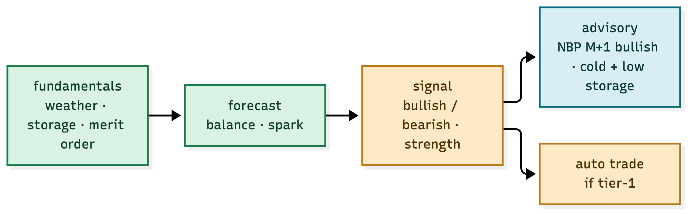
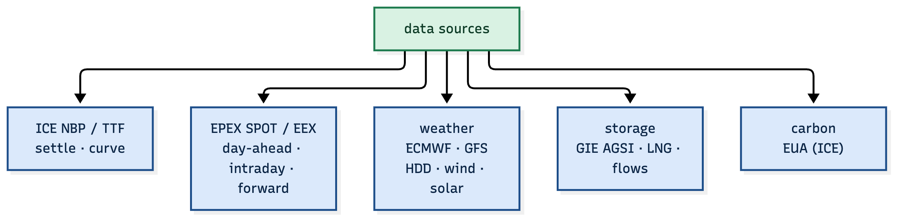

A focused system that really trades and advises the UK NBP natural-gas hub and the European power markets. Built on the ATLAS + envelope core, but with a single, sharp edge: weather, storage, the merit order and the spark spread.
One market complex, two commodities, one relationship:
The system advises (publishes a bullish/bearish view with a reason) and trades (when the view is a tier-1 signal).

Figure 1.1 — data in, models on the envelope core, advisory + auto out.
NBP price is a balance: supply against weather-driven demand, buffered by storage.

Figure 2.1 — Norway, LNG, UKCS and interconnectors supply; heating and power burn demand.
| Component | What drives it | Signal |
|---|---|---|
| supply | Norway flows, LNG arrivals, UKCS | more supply → bearish |
| demand | heating degree days, power burn | cold → bullish |
| storage | injection vs withdrawal, fill % | low storage → bullish into winter |
The balance is the model: tight balance (low storage + cold) = bullish NBP; loose balance (warm + high storage) = bearish.
Power price is set by the marginal plant — the most expensive unit needed to meet demand. Renewables come first (zero cost), then nuclear, then coal, then gas.

Figure 3.1 — gas is usually the marginal plant, so gas + carbon set the power price.
| Stack | Marginal cost | Effect on price |
|---|---|---|
| wind / solar | ~0 | more renewables → lower price |
| nuclear | low | baseload |
| coal | mid + carbon | higher |
| gas | high | sets the clearing price |
The insight: gas is usually the price-setter, so the power price is gas × heat-rate + carbon × intensity + a margin. That is the spark spread.

Figure 4.1 — power minus gas and carbon, the clean margin of a gas plant.
spark spread = power price − (gas price × heat-rate) − (carbon × emission intensity)
| Condition | Trade |
|---|---|
| spark spread high (plant is profitable) | long power, short gas + carbon |
| spark spread low / negative (plant losing) | short power, long gas + carbon |
The spark spread is the fundamental anchor of the whole complex: it ties the two commodities together and gives the system a mean-reverting relationship to trade.
Weather is the single biggest short-term driver of gas demand and renewable power supply.

Figure 5.1 — cold raises gas + power demand; wind and solar raise power supply.
| Weather | Effect |
|---|---|
| cold (high HDD) | more heating → more gas + power demand → bullish both |
| windy / sunny | more renewables → more power supply → bearish power |
| calm / cloudy | less renewables → gas sets power → bullish power |
The weather forecast is a first-class envelope producer: it publishes HDD, wind and solar forecasts, and the models consume them.

Figure 6.1 — gas, power and the spreads that link them.
| Product | Example |
|---|---|
| NBP gas | day-ahead, month-ahead (M+1), season, winter |
| power | day-ahead, intraday, base/peak forwards |
| spreads | spark, dark, summer-winter, NBP-TTF |
The system trades the spreads first — they are the mean-reverting relationships with a fundamental anchor — and the outrights only when the balance gives a strong directional view.

Figure 7.1 — the same signal drives a human-readable advisory and, at tier-1, an auto trade.
| Signal | Advisory (verbatim) |
|---|---|
| cold + low storage + tight LNG | "NBP M+1 bullish — cold snap, storage below 5yr avg" |
| high wind forecast + mild | "power day-ahead bearish — wind up, demand soft" |
| spark spread stretched high | "spark rich — long power, short gas+carbon" |
The advisory is not a score — it is a sentence with a reason, because a trader (or a compliance reviewer) needs the why, not just the number.

Figure 8.1 — ICE, EPEX/EEX, weather, storage and carbon feed the models.
| Source | What it provides |
|---|---|
| ICE | NBP / TTF gas, EUA carbon — settle and forward curve |
| EPEX SPOT / EEX | day-ahead and intraday power, forward power |
| ECMWF / GFS | weather — HDD, wind, solar forecast |
| GIE AGSI | European gas storage fill levels |
| ENTSO-E | generation mix, cross-border flows |
| Phase | What | Deliverable |
|---|---|---|
| 1 | data ingestion (ICE, EPEX, weather, storage) | envelopes on the bus |
| 2 | gas balance + merit order models | fundamental forecast |
| 3 | spark-spread model | the anchor relationship |
| 4 | advisory + tier signals | human-readable views + auto |
| 5 | execution (ICE / EEX via FIX) | orders + fills on the bus |
| 6 | margin + risk + compliance | the governor + reports |
That is a system that can really trade, and really advise.